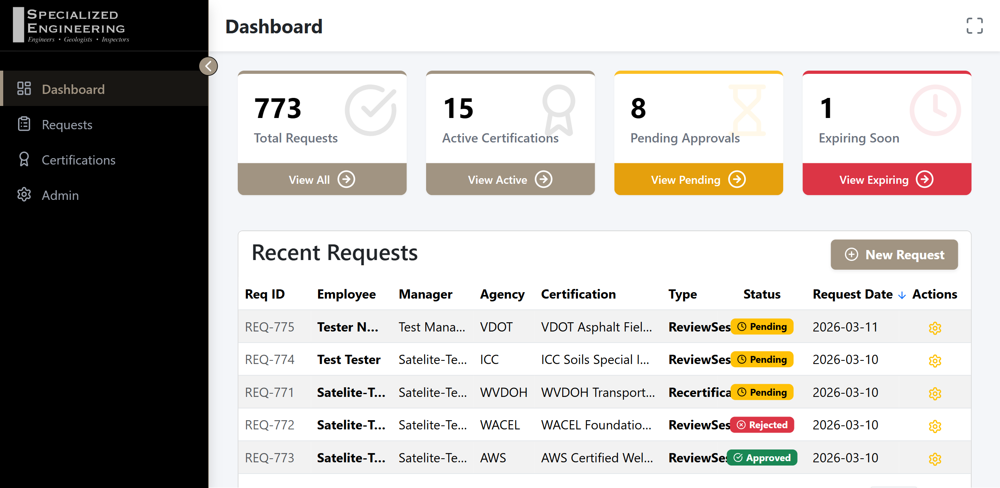
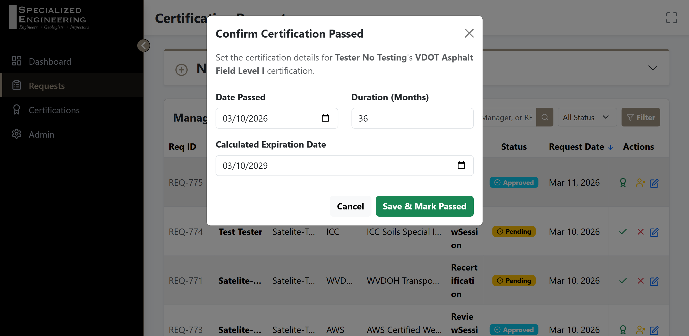
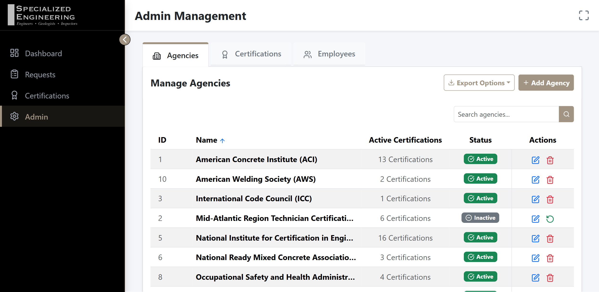
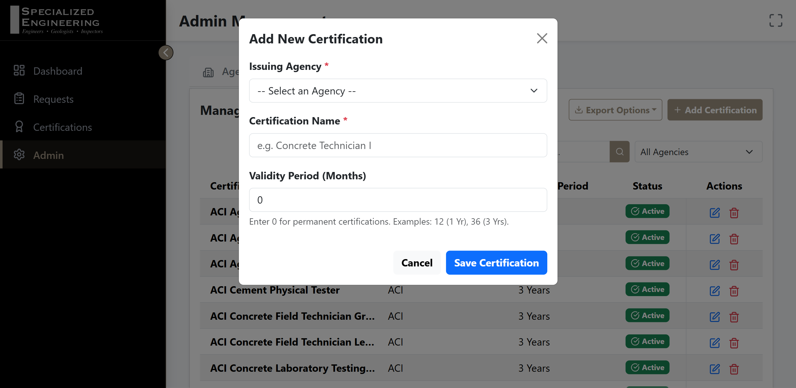
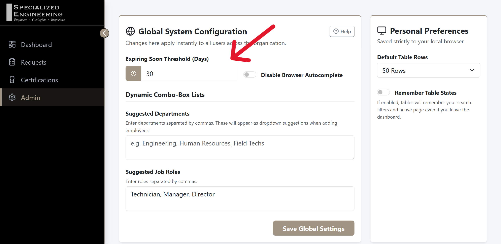

Specialized Engineering - HR Certification Portal User Guide
Welcome to the user manual for the Specialized Engineering HR Certification & Request Portal. This guide provides step-by-step instructions for utilizing every major functional area of the application.
🛠️ Phase 1: Infrastructure & Portal Access
Accessing the Portal
The HR Certification Portal is deployed as an internal IIS web application designed for desktop or Laptop use.
- Production URL:
http://10.1.0.47:8080 (Please check with your IT administrator for the specific server hostname or IP address).
- Authentication: This is an internal tool on the company intranet. It does not require a traditional username/password login screen; instead, access is restricted to the internal network.
Browser Compatibility
The User Interface is optimized for desktop and laptop displays (Google Chrome, Microsoft Edge).
Please note that the portal is not optimized for use on mobile devices but most tablets should work with the left hand sidebar collapsed.

📊 Phase 2: The Executive Dashboard
The Executive Dashboard provides high-level KPI monitoring and visibility into the workforce's health regarding certifications.
KPI Cards Explained
- Total Requests: The aggregate count of all historical certification request entries submitted.
- Active Certifications: Only records marked as "Passed" that currently have a valid, future expiration date.
- Pending Approvals: Records that have been submitted and are awaiting HR review.
- Expiring Soon: The count of active certifications that will expire within the configured threshold (default is 30 days).
Critical Action Items Table
Below the KPIs, the Recent Requests table highlights the latest activities. This table allows you to quickly spot requests requiring immediate attention (e.g., Pending Approvals). You can sort this table by clicking the column headers.

📝 Phase 3: Request Lifecycle Management
This section covers managing a certification request's transition from "Requested" to "Passed Certification."
1. Creating a New Request (Validation & Cascading Logic)
- Navigate to the Requests page.
- Click New Request to expand the form.
- Dual-Layer Validation: The system ensures all required fields are filled. Attempting to submit an empty form will trigger a validation error notification.
- Cascading Options: Select an Agency from the "Certification Agency" dropdown. The "Certification Desired" dropdown will immediately update to only show certifications offered by that specific agency.
2. Request Actions & Workflows
- Approving: Find a request in the "Pending" state and click the checkmark icon (
Approve Request) to change it to "Approved."
- Marking Passed: Once a request is Approved, a ribbon icon (
Mark as Passed) becomes available. Clicking it opens the "Mark Passed" modal.
- Auto-Calculation: Simply enter the Date Passed. The system references the certification's configured "Validity Period" and automatically calculates the exact "Calculated Expiration Date."
- Editing: You can update manager names, request types, or correct typos by clicking the blue pencil icon (
Edit Request) on any record.
3. Data Export
- Use the Export CSV button in the top right corner of the Requests card to generate a spreadsheet artifact matching your currently filtered view.



📚 Phase 4: Relational Dictionary (Agencies & Certs)
The Relational Dictionary maintains the data engine that drives the dropdown lists throughout the application.
1. Agency Management
- Navigate to the Admin Management section and select the Agencies tab.
- Here you can manage the list of governing bodies (e.g., ACI, MARTCP).
- To add a new regulating authority, click Add Agency and provide the abbreviation and full name.
2. Certification Mapping
- Switch to the Certifications tab.
- Click Add Certification.
- Link the specific certification to its issuing Agency and set its standard validity period in months (e.g., 36 months for a 3-year cert). Enter
0 for permanent/lifetime certifications.


⚙️ Phase 5: System Administration
The System Administration view manages global configuration options and system troubleshooting.
1. Threshold Settings
- Navigate to Admin Management and look under Global System Configuration.
- You can change the "Expiring Soon Threshold (Days)" (default is 30 days). Updating this instantly adjusts which certifications are flagged on the dashboard and email alerts.
2. Employee Registry
- Switch to the Employees tab in Admin Management.
- Manage the silent auto-generation of employees here. If duplicate or inactive employees appear from Active Directory imports, use the Deactivate (trash bin) tool to perform manual cleanup and hide them from selection menus.
